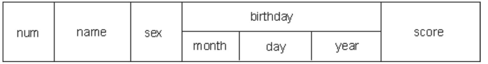

# 定义与初始化
格式: struct 结构体名 结构体变量名;
- 先定义结构体类型，再定义变量
c | struct Student { |
| char *name; |
| int age; |
| }; |
| |
| struct Student stu; |
- 定义结构体类型的同时定义变量
c | struct Student { |
| char *name; |
| int age; |
| } stu; |
- 匿名结构体定义结构体变量
c | struct { |
| char *name; |
| int age; |
| } stu; |
第三种方法与第二种方法的区别在于，第三种方法中省去了结构体类型名称，而直接给出结构变量，这种结构体最大的问题是结构体类型不能复用.
# 结构体变量初始化
- 定义的同时按顺序初始化
c | struct Student { |
| char *name; |
| int age; |
| }; |
| struct Student stu = {"lnj", 27}; |
- 定义的同时不按顺序初始化
c | struct Student { |
| char *name; |
| int age; |
| }; |
| struct Student stu = {.age = 35, .name = "lnj"}; |
- 先定义后逐个初始化
c | struct Student { |
| char *name; |
| int age; |
| }; |
| struct Student stu; |
| stu.name = "lnj"; |
| stu.age = 35; |
- 先定义后一次性初始化
c | struct Student { |
| char *name; |
| int age; |
| }; |
| struct Student stu; |
| stu2 = (struct Student){"lnj", 35}; |
# 成员访问
一般对结构体变量的操作是以成员为单位进行的，引用的一般形式为： 结构体变量名.成员名
c | struct Student { |
| char *name; |
| int age; |
| }; |
| struct Student stu; |
| |
| stu.age = 27; |
| printf("age = %d", stu.age); |
# 作用域
定义局部结构体会 屏蔽 全局同名的结构体.
# 结构体数组
结构体数组和普通数组并无太大差异，只不过是数组中的元素都是结构体而已
格式: struct 结构体类型名称 数组名称[元素个数]
c | struct Student { |
| char *name; |
| int age; |
| }; |
| struct Student stu[2]; |
- 定义同时初始化
c | struct Student { |
| char *name; |
| int age; |
| }; |
| struct Student stu[2] = <!--0-->; |
- 先定义后初始化
c | struct Student { |
| char *name; |
| int age; |
| }; |
| struct Student stu[2]; |
| stu[0] = {"lnj", 35}; |
| stu[1] = {"zs", 18}; |
# 结构体指针
一个指针变量当用来指向一个结构体变量时，称之为结构体指针变量
格式: struct 结构名 *结构指针变量名
通过结构体指针访问结构体成员，可以通过以下两种方式
- (* 结构指针变量). 成员名
- 结构指针变量 -> 成员名 (用熟)
c | |
| struct Student stu = {“lnj", 18}; |
| |
| |
| struct Student *p; |
| |
| |
| p = &stu; |
| |
| |
| printf("name=%s, age = %d \n", stu.name, stu.age); |
| |
| |
| printf("name=%s, age = %d \n", (*p).name, (*p).age); |
| |
| |
| printf("name=%s, age = %d \n", p->name, p->age); |
(* 结构指针变量) 两侧的括号不可少，因为成员符 . 的优先级高于 * .
如去掉括号写作 *pstu.num 则等效于 *(pstu.num) , 这样，意义就完全不对了.
# 结构体内存分析
给结构体变量开辟存储空间和给普通开辟存储空间一样, 会从内存地址大的位置开始开辟给结构体成员开辟存储空间和给数组元素开辟存储空间一样, 会从所占用内存地址小的位置开始开辟结构体变量占用的内存空间永远是所有成员中占用内存最大成员的倍数(对齐问题)
多实际的计算机系统对基本类型数据在内存中存放的位置有限制，它们会要求这些数据的起始地址的值是 某个数 k 的倍数，这就是所谓的内存对齐，而这个 k 则被称为该数据类型的对齐模数 (alignment modulus).
这种强制的要求一来简化了处理器与内存之间传输系统的设计，二来可以提升读取数据的速度。比如这么一种处理器，它每次读写内存的时候都从某个 8 倍数的地址开始，一次读出或写入 8 个字节的数据，假如软件能 保证 double 类型的数据都从 8 倍数地址开始，那么读或写一个 double 类型数据就只需要一次内存操作。否则，我们就可能需要两次内存操作才能完成这个动作，因为数据或许恰好横跨在两个符合对齐要求的 8 字节 内存块上.
# 存储空间大小分析
c | struct Person{ |
| int age; |
| char ch; |
| double score; |
| }; |
| struct Person p; |
| printf("sizeof = %i\n", sizeof(p)); |
- 占用内存最大属性是 score, 占 8 个字节，所以第一次计算机会先给结构体分配 8 个字节.
- 将第一次分配的 8 个字节分配给 age4 个，分配给 ch1 个，还剩下 3 个字节
- 当需要分配给 score 时，发现只剩下 3 个字节，所以会再次开辟 8 个字节存储空间
- 一共开辟了两次 8 个字节空间，所以最终 p 占用 16 个字节
c | struct Person{ |
| int age; |
| double score; |
| char ch; |
| }; |
| struct Person p; |
| printf("sizeof = %i\n", sizeof(p)); |
- 占用内存最大属性是 score, 占 8 个字节，所以第一次计算机会先给结构体分配 8 个字节.
- 将第一次分配的 8 个字节分配给 age4 个，还剩下 4 个字节
- 当需要分配给 score 时，发现只剩下 4 个字节，所以会再次开辟 8 个字节存储空间
- 将新分配的 8 个字节分配给 score, 还剩下 0 个字节
- 当需要分配给 ch 时，发现上一次分配的已经没有了，所以会再次开辟 8 个字节存储空间
- 一共开辟了 3 次 8 个字节空间，所以最终 p 占用 24 个字节
# 结构体嵌套

c | struct Date{ |
| int month; |
| int day; |
| int year; |
| } |
| struct stu{ |
| int num; |
| char *name; |
| char sex; |
| struct Date birthday; |
| Float score; |
| } |
结构体不可以嵌套自己变量，可以嵌套指向自己这种类型的指针
c | struct Student { |
| int age; |
| struct Student stu; |
| }; |
# 对嵌套结构体成员的访问
c | struct Date { |
| int year; |
| int month; |
| int day; |
| }; |
| |
| struct Student { |
| char *name; |
| struct Date birthday; |
| }; |
| |
| struct Student stu; |
| stu.birthday.year = 1986; |
| stu.birthday.month = 9; |
| stu.birthday.day = 10; |
# 结构体值拷贝
- 结构体虽然是构造类型，但是结构体之间赋值是值拷贝，而不是地址传递
c | struct Person{ |
| char *name; |
| int age; |
| }; |
| struct Person p1 = {"lnj", 35}; |
| struct Person p2; |
| p2 = p1; |
| p2.name = "zs"; |
| printf("p1.name = %s\n", p1.name); |
| printf("p2.name = %s\n", p2.name); |
- 所以结构体变量作为函数形参时也是值传递，在函数内修改形参，不会影响外界实参，除非以结构体指针变量作为函数形参地址传递，才会影响外界实参.
c | #include <stdio.h> |
| |
| struct Person{ |
| char *name; |
| int age; |
| }; |
| |
| void test1(struct Person per); |
| void test2(struct Person* per); |
| |
| int main() |
| { |
| struct Person p1 = {"lnj", 18}; |
| test1(p1); |
| printf("p1.name = %s\n", p1.name); |
| printf("p1.age = %d\n", p1.age); |
| struct Person* p2 = &p1; |
| test2(p2); |
| printf("p2->name = %s\n", p2->name); |
| printf("p2->age = %d\n", p2->age); |
| return 0; |
| } |
| void test1(struct Person per){ |
| per.name = "zs"; |
| per.age = 20; |
| } |
| void test2(struct Person* per){ |
| per->name = "zs"; |
| per->age = 20; |
| } |